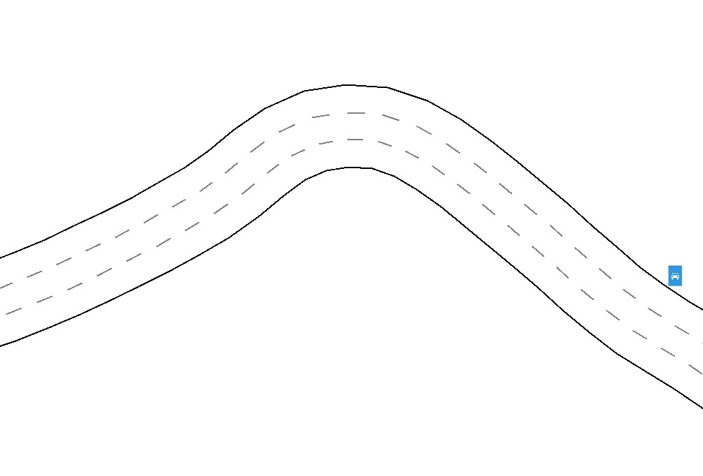
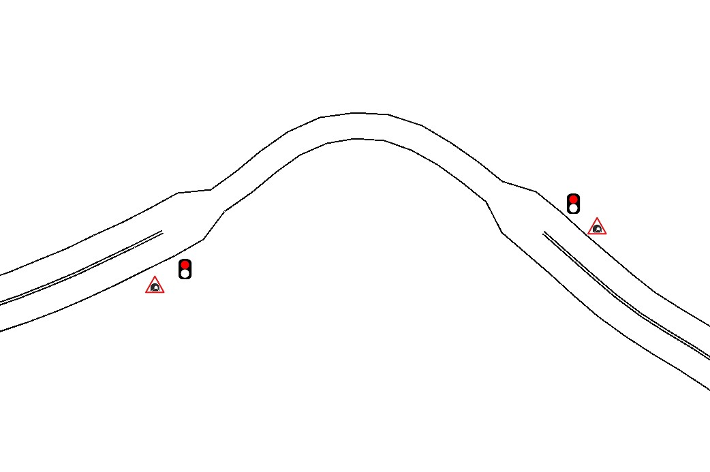
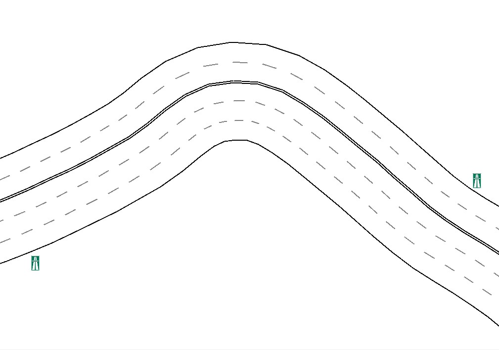

Справочная информация к «Система моделирования движения транспорта на автодороге»
Выбор типа дороги
На рисунке 1 представлена форма, на которой следует выбрать один из трех типов дороги и нажать кнопку 'Далее', чтобы открыть следующее окно настроек.

Рисунок 1 — Форма выбора типа дороги
Выбрать можно один из трех типов дороги:
Дорога
Дорога представляет собой совокупность полос с односторонним или двусторонним движением и ограничением скорости 20-60 км/ч.
Рисунок 2 — Модель односторонней дороги
Тоннель
Тоннель представляет собой узкий участок дороги, где организовано реверсивное движение, обеспечиваемое настраиваемым светофором. Ограничение скорости 20-60 км/ч.
Рисунок 3 — Модель тоннеля
Автомагистраль
Автомагистраль представляет собой совокупность полос с односторонним или двусторонним движением и ограничением скорости 40-110 км/ч.
Рисунок 4 — Модель автомагистрали